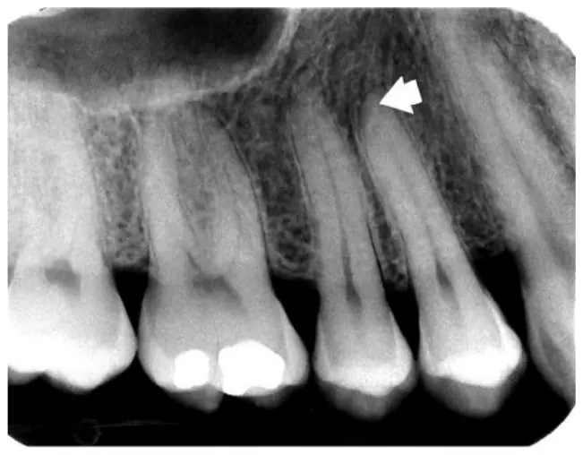
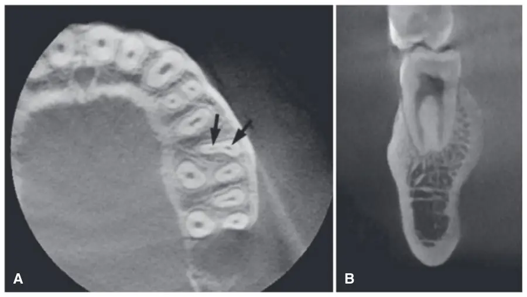

نسخه استخراجشده؛ ترجمه یا تأیید علمی انجام نشده است. وضعیت: captured
یک مولر را برای درمان ریشه باز کردهای و روی پریاپیکال فقط یک کانال دیده بودی. حالا دو تا پیدا میکنی. رادیوگرافی دروغ نگفته بود — فقط دو بعد بود.

پالپ چرا تیره است؟ چون «از بافت نرم تشکیل شده و در نتیجه رادیولوسنت دیده میشود». اتاقک و کانالها از درون تاج تا آپکس ریشه امتداد دارند.
و مهمترین جملهی این درس دربارهی آپکس: در برخی دندانهای نرمال، کانال «در ناحیهی آپکس تنگ به نظر میرسد و در آخرین حدود ۱ میلیمتر طولش قابل تشخیص نیست». در چنین حالتی، کانال ممکن است «روی کنارِ دندان، کمی قبل از آپکس رادیوگرافیک، خارج شود». پس نبودن تصویرِ کانال در نوک ریشه، یافتهی طبیعی است نه انسداد.
کانالهای لترال میتوانند بهعنوان شاخهای از یک کانال ریشهی در غیر این صورت نرمال رخ دهند؛ ممکن است تا آپکس امتداد یابند و در یک فورامن نرمال تمام شوند، یا از کنار ریشه خارج شوند.
و پیامد بالینیاش: «در هر دو حالت، دو یا چند فورامن انتهایی میتوانند سبب شکست درمان اندودانتیک شوند، اگر شناسایی نشوند.»
سوپرایمپوزیشن دو کانال در یک ریشه — مثال کلاسیکش ریشهی مزیوباکال مولر ماگزیلا است. راهحل: «رادیوگرافیهایی با زوایای افقی متفاوت ممکن است لازم باشد تا تصویر این کانالها از هم جدا شود.» و اگر یافتههای پریاپیکال به کانال اضافه یا مورفولوژی پیچیده مشکوک باشد، «باید CBCT با FOV محدود گرفته شود».
در CBCT کدام مقطع چه چیزی میگوید؟ «کانالهای فردی روی مقاطع اگزیال بهترین شناسایی را دارند، در حالی که مسیر کانال در طول ریشه و خروجش از آپکس معمولاً روی مقاطع کرونال و ساژیتال ارزیابی میشود.» این تقسیم کار را حفظ کن.
و پالپی که کوچک میشود: «رسوب تدریجی عاج ثانویه با افزایش سن رخ میدهد. این فرایند از آپیکال آغاز میشود، به سمت کرونال پیش میرود و میتواند به ابلیتراسیون پالپ بینجامد.» ترومای دندان هم — از پوسیدگی، ضربه، ترمیم، اتریشن یا اروژن — تولید عاج را تحریک میکند. در آن موارد معمولاً شاهدِ منبعِ تحریک هم در تصویر هست؛ ولی در ضربهی خیلی خفیف، «تنها خاطرهی خود بیمار ممکن است دلیل واقعی کوچک شدن اتاقک پالپ را نشان دهد».
روی پریاپیکال یک نوجوان، زیر ریشهی مولر دوم یک ناحیهی تاریکِ گرد میبینی. ضایعهی پریاپیکال؟ نه. این دندان دارد ساخته میشود.

تصویرش مشخص است: در انتهای ریشهی در حال تشکیل، «کانال پالپ واگرا میشود و دیوارههای ریشه بهسرعت به یک لبهی چاقویی باریک میشوند».
و در فرورفتگیای که دیوارههای ریشه میسازند: «یک ناحیهی کوچک، گرد و رادیولوسنت در استخوان ترابکولار قرار دارد که با یک لایهی نازک استخوان کورتیکال احاطه شده است. این پاپیلای دندانی است که با کریپت استخوانیاش محدود شده.»
پاپیلا چه میسازد؟ «عاج و پریموردیوم پالپ». و وقتی دندان به بلوغ میرسد، «دیوارههای پالپی در ناحیهی آپیکال شروع به تنگ شدن میکنند و نهایتاً در مجاورت نزدیک هم قرار میگیرند».
و دلیل یاد گرفتن این توالی، دقیقاً همان چیزی است که این درس را لازم میکند: آگاهی از این توالی «اغلب در ارزیابی مرحلهی بلوغ دندان در حال تشکیل مفید است؛ و همچنین کمک میکند از اشتباه گرفتن آن رادیولوسنسی آپیکال با یک ضایعهی پریاپیکال پرهیز شود».
دو نشانهی افتراقی که باید بگردی: در پاپیلای دندانی، ریشه ناقص و واگرا است (نه یک ریشهی کامل با آپکس بسته)، و تاریکی با یک حاشیهی کورتیکال نازک و پیوسته — کریپت — احاطه شده است. ضایعهی التهابی پریاپیکال معمولاً پیرامون آپکسِ تکمیلشدهی یک دندان است و حاشیهی کورتیکال منظم ندارد.
و یک نکتهی سهبعدی که پریاپیکال از تو پنهان میکند: CBCT «مورفولوژی سهبعدی ریشهها، اتاقکها و کانالهای پالپ را دقیقتر از رادیوگرافی داخلدهانی نشان میدهد» — و برخلاف پریاپیکال، سطوح باکال و لینگوال دندان را هم آشکار میکند. پس واریاسیونهایی مثل دیلاسراسیون در بُعد باکولینگوال که روی پریاپیکال دیده نمیشوند، در CBCT بهخوبی نمایان میشوند.